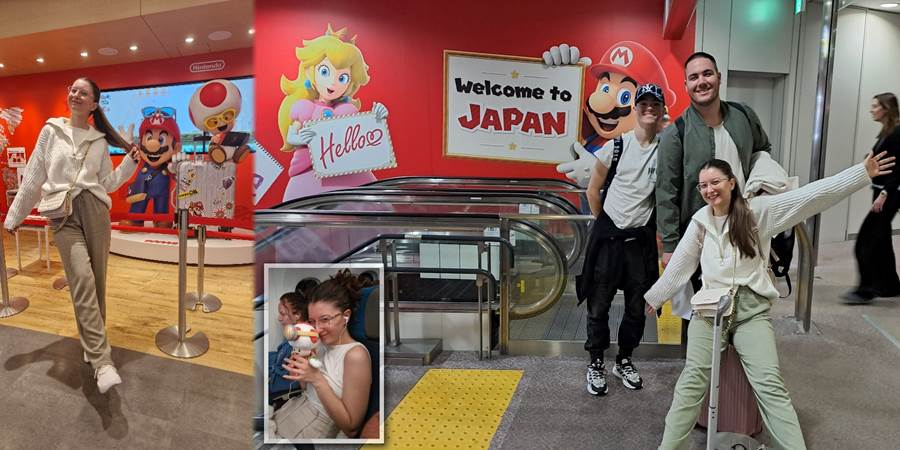
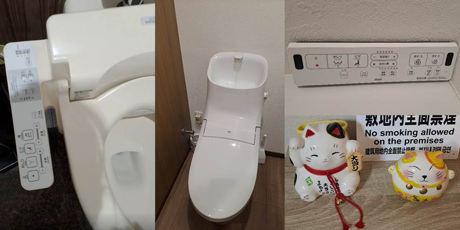
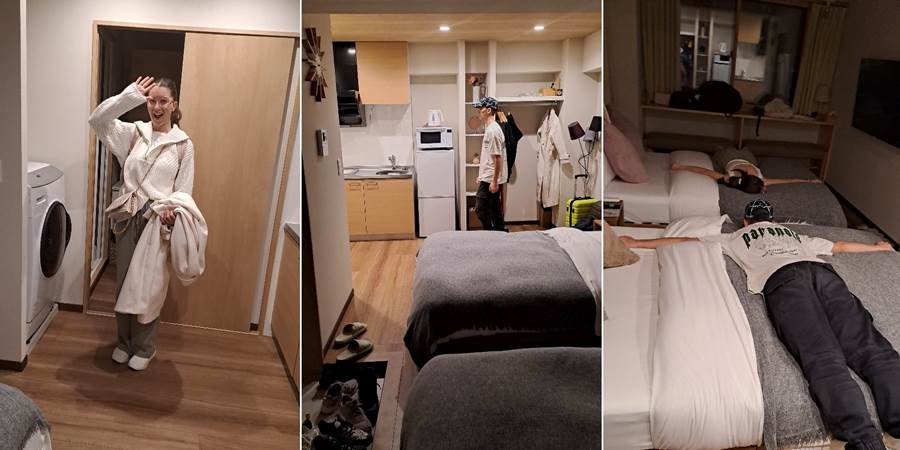
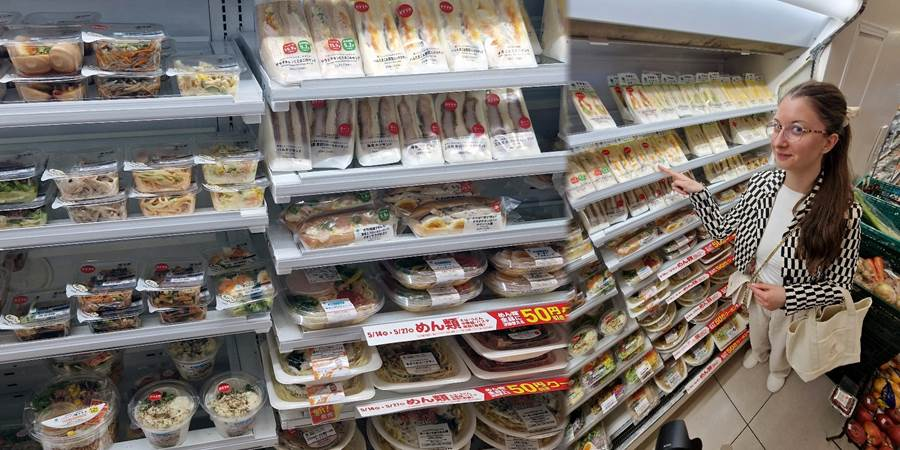
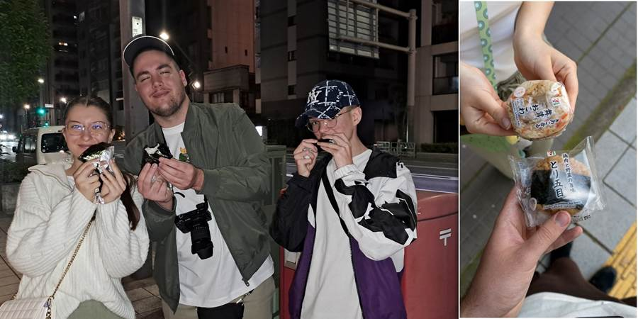
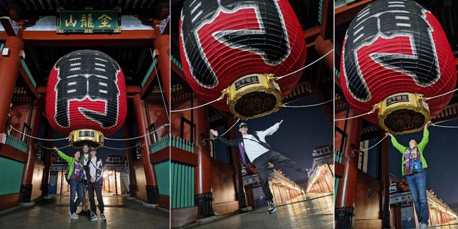
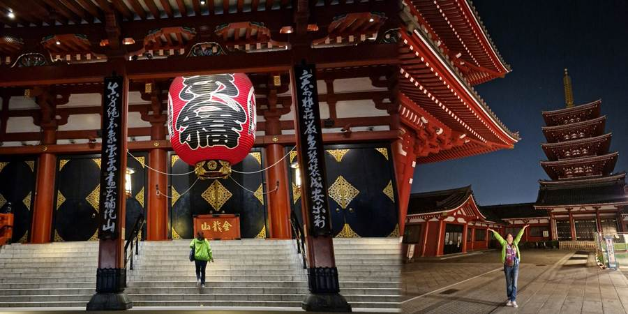
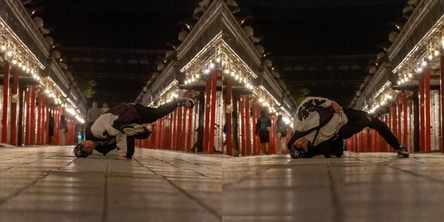
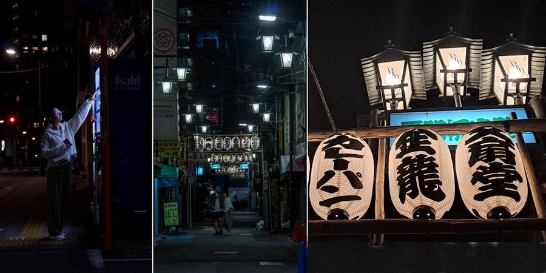

Prvi dan: Akihabara i Senso ji
O, došao je dan da sletim u Japan (pevam stihove grupe Smak, koji su u originalu: O, da li će doći dan da sletim u Japan).

Čuvene WC šolje sa n dugmića smo susreli već na aerodromu. Ne znam u čemu je problem koji drugi spominju. Odmah sam ih savladala.
Zaglavila guzicu u otvor da me celu ne opere i peri napred, nazad, duvaj, suši, muzika da se ne čuje kako piškim, jačina i toplota mlaza se podešavaju, po želji se greje daska.

Sa aerodroma smo došli busom do tokijske železničke stanice. Tu smo iskusili poslovičnu japansku ljubaznost.
Prišao nam jedan mladi par i pitali su nas gde treba da idemo. Izgledali nam sve opcije na telefonu i videli da nam taksi za nas 4 najviše odgovara.
Zaustavili nam taksi na ulici uz sve osmehe. Uputili taksistu gde da nas vozi, zbrinuli nas. Bili su preslatki i znali su engleski.
Stan nam se svideo. Po dečijoj želji je u Akihabari. Akihabara je kvart u Tokiju poznat po elektronici, anime kulturi, video igricama i manga prodavnicama.
Nije ni tako mali kao što bi se očekivalo za japanske stanove.
I u stanu imamo WC sa dugmićima. Taman smo bili ponosni kako smo savladali WC šolju kad nismo znali da zaustavimo vodu iz lavaboa, koja poteče kad se pusti i WC šolja. A lavabo sastavni deo WCa. Iznad kotlica. Prvo smo mislili da smo otkrili kombinaciju dugmica da zaustavimo vodu. Sledeći put nije upalilo. Onda smo mislili da se zaustavi kad se zatvore vrata. Sledeći put ništa. Na kraju smo ustanovili da je na tajmer. Međutim zaustavi se kada se napuni kotlić. Postoji i dugme za privatnost kad se dobije zvuk šuštanja koji poništava ostale zvuke.

Iako smo stigli umorni, Tokio nas je vukao da ga vidimo. Pre šetnje smo otišli u 7 Eleven prodavnicu.
Nakupovali smo sve što smo videli na instagramu. Deca su pojela tuna majo onigiri (pirinač, tuna i majonez) kao iz crtaća.


Ovde je pola četiri ujutru. Nama oči na vrh glave. Upravo smo došli iz šetnje. Šetali smo po Akihabari.
Deca su našla najveću robnu kuću sa suvenirima na n spratova, Don Kihote, bez ijedne stolice (što je važno jer nigde nisam mogla sesti).
Svašta njima interesantno su videli. Pokupovali smo Kit Katove sa ukusom jagode, narandže i macha čaja. Luka čarape na prst za japanke. Neke džidža bidže.
Platili smo bez poreza uz pasoš. Upakovala nam je i rekla da ne otvaramo dok ne izađemo iz Japana.
Ma baš će ona znati. Mi smo sve raspakovali i pojeli. A onda se setili da je verovatno sve na pasošu i da će tražiti na carini.
Hramovi su im ili budistički, gde veruju u princa Budu koji je dostigao stanje nirvane, mira i spokoja.
Ili su šintoistički, gde veruju u prirodne sile (oluja, Srećna mačka, Sveta planina Fuji, bik, lisica, zec...).
Šintoistički se odmah prepoznaju po Tori kapijama koje iz svetovnog vode u duhovni svet.
Prolazi se kroz njih levom ili desnom stranom jer je sredina rezervisana za Bogove.
Posle smo u tri ujutru išli do čuvenog hrama Senso ji. Baš je lep.
Tek je po ko prošao, a danju se ne može proći od gužve.
Čak skrenu u sporednu ulicu da ne smetaju ako se slikamo.
Islikali smo se. I sa nekim devojčicama koje, kad su nas slikale, su slikale i selfi pa imamo i njihovu sliku.




Duško nas je zeznuo. Njegov svemogući adapter za sve vrste priključaka na svetu nam ne radi.
Ništa ne možemo da napunimo. Ni telefone, ni Lukina sokoćala.
Luka je izašao napolje da potraži negde da kupi. U četiri ujutru. Tada još nismo znali da mogu da se iznajme u 7 Eleven prodavnicama.
Luka je našao punjač za telefon. Sreća. Rešena agonija da neću moći da slikam prvi dan u Japanu.
Iznervirao se što slike sa aparata nisu u raw formatu nego jpg, ostalo je tako podešeno još od Kolmara, i sad kaže da su đubre.
A baš se trudio i puno slikao.
Da ne prekinemo tradiciju jeli su nudle kad smo došli, ups ramen.
Ova WC šolja će nas pokvariti zauvek.
Ne propustite sledeću avanturu!
Kad Sandra krene u novi kraj sveta, vaš inbox prvi sazna. Prijavite se i stižu vam sve nove priče mejlom.